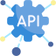
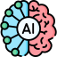

11+ anos
de experiência em desenvolvimento de software
Desenvolvedor de Software Sênior
Mais de 11 anos criando e evoluindo produtos digitais em diferentes contextos: ERP, integrações, APIs, aplicações web e serviços críticos de negócio.
de experiência em desenvolvimento de software
com atuação em produtos corporativos e integração
do backend à entrega de interfaces web responsivas
Quem sou eu
Sou Felipe Ranzoni Borges, desenvolvedor de software com foco em soluções empresariais de alta confiabilidade. Atuo com visão de produto, qualidade de código e compromisso com entregas que geram impacto real para clientes e operações.
Minha experiência inclui evolução de plataformas existentes, construção de novos módulos, integrações entre sistemas e participação em projetos com inteligência artificial.
Como posso ajudar

Desenvolvimento de APIs RESTful e serviços backend com foco em escalabilidade, segurança e manutenção sustentável.
Construção e evolução de front-ends modernos, acessíveis e responsivos para sistemas internos, portais e produtos digitais.
Implementação de rotinas, jobs e integrações entre plataformas para reduzir retrabalho e aumentar previsibilidade operacional.

Experiência prática em projeto profissional de chat com IA e evolução contínua em aplicações orientadas por modelos inteligentes.
Criação de protótipos em Unity para validação de mecânicas, interação e fluxo de gameplay.
Trajetória
Trabalho no desenvolvimento e evolução do produto web da empresa. Além disso, participei do desenvolvimento da inteligência artificial implementada no software.
Trabalhei por contrato no desenvolvimento de soluções para consórcio, atuando em aplicativos web, serviços de integração e outras aplicações.
Atuei na evolução e manutenção dos produtos financeiros do setor de desenvolvimento, abrangendo aplicações Web e Desktop. Além disso, participei do desenvolvimento de um módulo SaaS para o setor patrimonial.
Na época, era a maior empresa de software de Ribeirão Preto. Atuei como desenvolvedor web no módulo financeiro e contábil do ERP da companhia.
Atuei em uma software house como programador terceirizado para o setor administrativo do Grupo SEB. Nesse período, desenvolvi serviços de integração voltados à migração de dados entre diferentes aplicações.
Atuei como programador no ERP da empresa, desenvolvido em Delphi, trabalhando tanto na manutenção quanto na evolução do sistema.
Portfólio
Soluções com foco em arquitetura, qualidade e resolução de problemas reais de negócio.
Protótipos em Unity para estudo de mecânicas, performance e experiência interativa.
Stack
Meu foco principal está em ecossistema .NET e desenvolvimento web, com domínio complementar de bancos de dados, cloud-ready tooling e práticas de qualidade.
Contato
Disponível para oportunidades CLT, consultoria e projetos freelance com foco em produtos web corporativos.